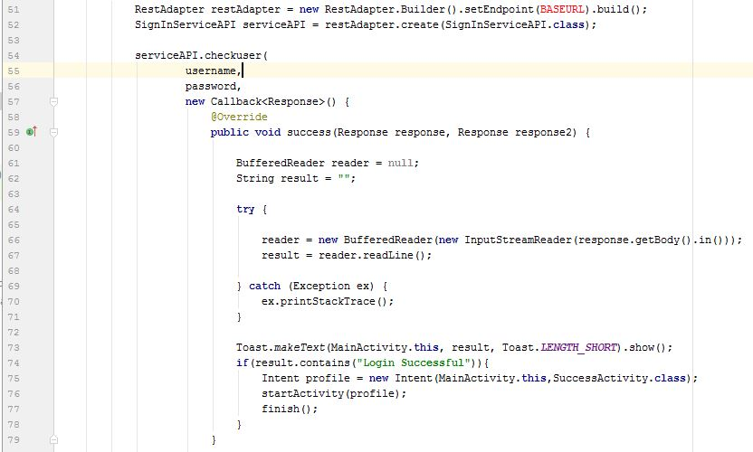
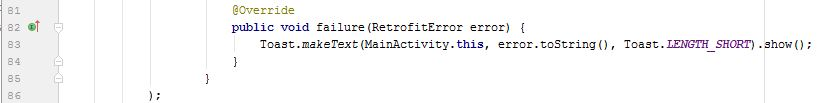

How to Send POST request in Android using Retrofit.
We are going to look at an awesome library Retrofit to make the http calls. Retrofit is better then any other library for making http calls in terms of ease of use, performance, extensibility and other things. It is a type-safe REST client for Android built by Square. Using this tool android developer can make all network stuff much more easier. As an example, we are going to do so.
In this tutorial we will try to insert the data to MySQL Database, for this I will be using WAMP Server on my local machine for the database.I will also use php script on the server site for taking the request from the App and and performing things on the server site.
Let's start the tutorial Step by Step:
Step 1: Create New Project.
In the first step, launch Android Studio and select Create New Project.
Then we have to select the SDK for the device on which your App is going to run.

Then we have to select the Activity template, for this tutorial I'm selecting NO ATIVITY

Now, hit the Finish button and your project file is ready.
Step 2: Adding Dependencies to the Project.
After creating the project we have to add the dependencies to the project build.grade file(Module:app) and synchronise the project.This will download all the necessary files for the retrofit.

Since, we have to work on network so we have to add permissions in the AndroidManiFest.xml file.
Step 3: Create following directory in the project.
(*) project_file/java/com.example.project_name/app/ManiActivity.java
(*) project_file/java/com.example.project_name/api/RegisterService.java(Interface)
(*) project_file/res/layout/activity_main.xml
Step 4: Setting up the AndroidManiFest.xml file for the Project.
We have created the file with NoActivity template so it becomes our problem to set the AndroidMainifest file for the layout file.We have to add following to the AndroidManiFest.xml.

Finally our AndroidManifest.xml file will look like this.
Step 5: Setting layout.
Starting with the general format to create a layout, insert this to activity_main.xml .

Now, we need text boxes for entering data by the user. Insert the following between the RelativeLayout tag.

After inserting the following code you will get the layout as shown in the snapshot.You can ignore the "KooK" label in this snap, that was my project name in your layout your project name will appear.
Step 6: Setting MainActivity.
First create the class MainActivity in MainActivity.java file.

Now, create the onCreate method which will be responsible for interaction with the layout

Next will be the signIn method which will be responsible for taking entries from the layout and changing it to a string variable which can be used.

You can ignore the errors right now it will be fixed after the completion.After getting the entry you have to make connection with the server and send the data to the server. For this, write this code to the else condition block.
For handling the failure we have to write this also.
Now u will need to make a variable for the URL that will contain the the Ip address or the server link. In my case im using my machine for the wamp server so the Ip will be my machine Ip but not the local host IP, to understand why not local host you can check my this tutorial.
the final imports for MainActivity will be:
Step 7: Setting the API file.
This file will be responsible for making Calls and response to and from the server.
Step 8: Setting the Database.
Fire the wamp server and go to phpMyAdmin.Their you will get an option Database, select it and create a database.I have made with the name of kukdu_ku.
Now you have to create a table inside you database, like i have created with the name login_tb which contains 3 columns.

username is the primary key in the table
Enter some data to run the test and we are done withe database.
Step 9: Setting the server site with php
First go to the directory where you have installed the wamp server, then in that you have to look for folder with name "www".
Create a folder with name "text" and two files within it with name "insert.php" & "db_conn.php".
The db_conn.php file will contain the connection part with database MySQL.
The insert.php will be responsible for taking data from app and inserting it to the database.

And you have created an app which can insert the data.